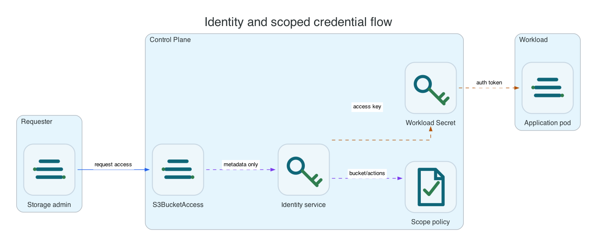

Reference / Runtime
Identity and scoped S3 credentials.
Li9 S3 separates runtime identity, web identity, bucket ownership, and workload credentials. Credentials are scoped to a bucket and purpose, not shared as one global administrator key.
Credential Types

| Credential | Purpose | Lifecycle Owner |
|---|---|---|
| Runtime service credentials | Internal service-to-service communication. | Operator, Helm release, or host installer. |
| Bucket owner credentials | Administrative access for a specific bucket. | S3Bucket on OpenShift or runtime control API on other platforms. |
| Scoped workload credentials | Application read/write/list access with action and prefix constraints. | S3BucketAccess, OBC/COSI flow, or runtime control API. |
| Web UI identity | Interactive administrative or tenant access to web surfaces. | Separate from S3 API access keys. |
OpenShift Secrets
oc -n li9-s3-runtime get s3bucket app-data -o jsonpath='{.status.secretName}{"
"}'
oc -n li9-s3-runtime get s3bucketaccess app-data-reader -o jsonpath='{.status.secretName}{"
"}'
oc -n li9-s3-runtime get secret app-data-reader-s3 -o jsonpath='{.data.AWS_ACCESS_KEY_ID}' | base64 -d
oc -n li9-s3-runtime get secret app-data-reader-s3 -o jsonpath='{.data.AWS_ENDPOINT_URL}' | base64 -dScoping Rules
| Scope | Use For | Avoid |
|---|---|---|
| Read-only prefix | Consumers that only fetch reports, backups, or published artifacts. | Granting s3:PutObject or unrestricted bucket access. |
| Read/write prefix | Applications that own one key prefix inside a shared bucket. | Allowing delete across unrelated prefixes. |
| Bucket admin | Lifecycle, replication, or policy automation for one bucket. | Using a global runtime admin key in workloads. |
Rotation And Revocation
On OpenShift, delete or update the S3BucketAccess resource to revoke or rotate generated credentials. For Helm, Linux, and Windows installations, use the runtime control API or platform admin tooling to issue and revoke keys.
oc -n li9-s3-runtime delete s3bucketaccess app-data-reader
oc -n li9-s3-runtime get secret app-data-reader-s3Verification
aws --endpoint-url "$ENDPOINT" --region "$AWS_REGION" s3api list-objects-v2 --bucket "$BUCKET" --prefix reports/
aws --endpoint-url "$ENDPOINT" --region "$AWS_REGION" s3api put-object --bucket "$BUCKET" --key forbidden/test.txt --body /tmp/file || test "$?" -ne 0